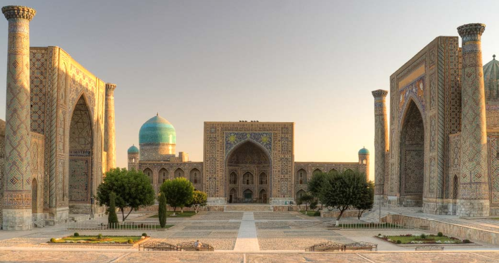
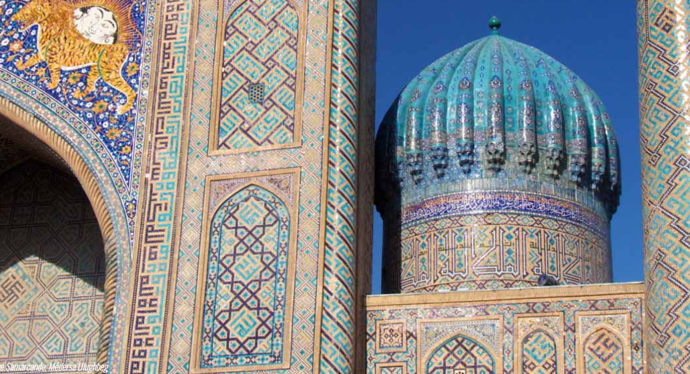
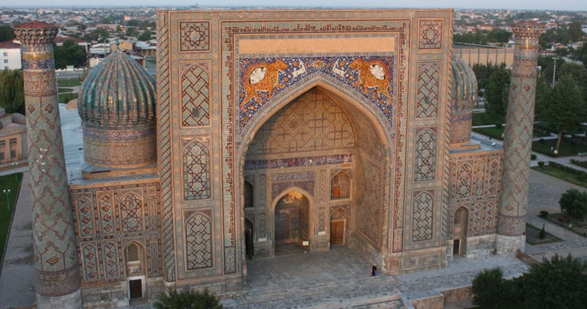
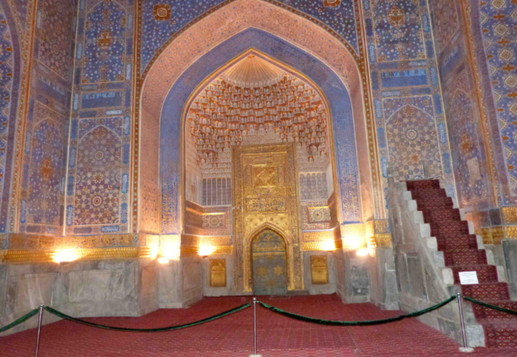

| Accueil | Nos voyages | Notre coup de coeur | Qui sommes nous? |
|---|
Samarcande est la plus fameuse ville de l’Ouzbékistan moderne. C’est l’une des plus anciennes villes du monde avec 2 750 ans d’histoire, aussi ancienne que Rome, Athènes ou Babylone. Bien qu'ayant une population que de 500 000 habitants en 2015, c'est la plus connue des villes d'Asie Centrale et l'une des plus belles avec tous ses témoignages historiques et architecturaux de son passé liés à la célèbre Route de la Soie. Samarcande est d'ailleurs classée à ce titre au patrimoine mondial de l'Unesco.
Située au cœur de l’ancienne ville de Samarcande regroupe un ensemble de trois médersas majestueuses qui sont les principaux sites de la ville. Rendez vous sur cette place et admirez le paysage, puis nous vous invitons à visiter les trois médersas.
Renommée en l’honneur de l’astronome. Son portail est orné de motifs d'étoiles à dix branches symbolisant le ciel et l'astronomie.
Juste en face de la Médersa UlughBeg se situe la Médersa Cher-Dor, "demeure des lions", symbole national de l'Ouzbékistan, construite deux siècles après la médersa d’Ulughbeg.
La Médersa Tilla Kari. "Tilla Kari" signifie « dorée ». Sa décoration intérieure émerveille par la qualité de ses peintures dorées. Cette mosquée a longtemps été la principale mosquée de Samarcande.
